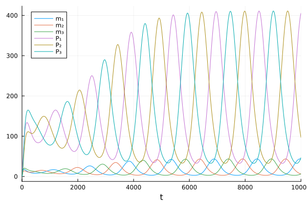
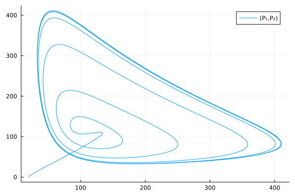
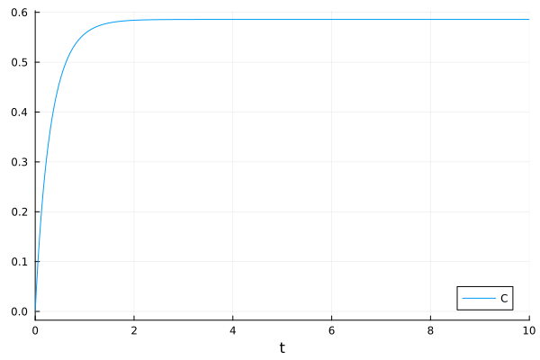

Catalyst ODE examples#
Catalyst.jl is a symbolic modeling package for analysis and high-performance simulation of chemical reaction networks.
Repressilator#
Repressilator model consists of a biochemical reaction network with three components in a negative feedback loop.
using Catalyst
using ModelingToolkit
using OrdinaryDiffEq
using Plots
Define the reaction network
repressilator = @reaction_network begin
hillr(P₃, α, K, n), ∅ --> m₁
hillr(P₁, α, K, n), ∅ --> m₂
hillr(P₂, α, K, n), ∅ --> m₃
(δ, γ), m₁ ↔ ∅
(δ, γ), m₂ ↔ ∅
(δ, γ), m₃ ↔ ∅
β, m₁ --> m₁ + P₁
β, m₂ --> m₂ + P₂
β, m₃ --> m₃ + P₃
μ, P₁ --> ∅
μ, P₂ --> ∅
μ, P₃ --> ∅
end
Reactions in the reaction network
reactions(repressilator)
15-element Vector{Catalyst.Reaction}:
Catalyst.hillr(P₃(t), α, K, n), ∅ --> m₁
Catalyst.hillr(P₁(t), α, K, n), ∅ --> m₂
Catalyst.hillr(P₂(t), α, K, n), ∅ --> m₃
δ, m₁ --> ∅
γ, ∅ --> m₁
δ, m₂ --> ∅
γ, ∅ --> m₂
δ, m₃ --> ∅
γ, ∅ --> m₃
β, m₁ --> m₁ + P₁
β, m₂ --> m₂ + P₂
β, m₃ --> m₃ + P₃
μ, P₁ --> ∅
μ, P₂ --> ∅
μ, P₃ --> ∅
State variables in the reaction network
unknowns(repressilator)
6-element Vector{SymbolicUtils.BasicSymbolic{Real}}:
m₁(t)
m₂(t)
m₃(t)
P₁(t)
P₂(t)
P₃(t)
Parameters in the reaction network
parameters(repressilator)
7-element Vector{Any}:
α
K
n
δ
γ
β
μ
To setup parameters (p) and initial conditions (u0), you can use Julia symbols to map the values.
p = [:α => 0.5, :K => 40, :n => 2, :δ => log(2) / 120, :γ => 5e-3, :β => 20 * log(2) / 120, :μ => log(2) / 60]
u0 = [:m₁ => 0.0, :m₂ => 0.0, :m₃ => 0.0, :P₁ => 20.0, :P₂ => 0.0, :P₃ => 0.0]
6-element Vector{Pair{Symbol, Float64}}:
:m₁ => 0.0
:m₂ => 0.0
:m₃ => 0.0
:P₁ => 20.0
:P₂ => 0.0
:P₃ => 0.0
Or you can also use symbols from the reaction system with the @unpack macro (less error prone)
@unpack m₁, m₂, m₃, P₁, P₂, P₃, α, K, n, δ, γ, β, μ = repressilator
p = [α => 0.5, K => 40, n => 2, δ => log(2) / 120, γ => 5e-3, β => 20 * log(2) / 120, μ => log(2) / 60]
u0 = [m₁ => 0.0, m₂ => 0.0, m₃ => 0.0, P₁ => 20.0, P₂ => 0.0, P₃ => 0.0]
6-element Vector{Pair{Symbolics.Num, Float64}}:
m₁(t) => 0.0
m₂(t) => 0.0
m₃(t) => 0.0
P₁(t) => 20.0
P₂(t) => 0.0
P₃(t) => 0.0
Then we can solve this reaction network as an ODE problem
tspan = (0.0, 10000.0)
oprob = ODEProblem(repressilator, u0, tspan, p);
sol = solve(oprob)
plot(sol)

Use extracted symbols for a phase plot
plot(sol, idxs=(P₁, P₂))

Generating reaction systems programmatically#
There are two ways to create a reaction for a ReactionSystem:
Reaction()function.@reactionmacro.
The Reaction(rate, substrates, products) function builds reactions.
To allow for other stoichiometric coefficients we also provide a five argument form: Reaction(rate, substrates, products, substrate_stoichiometries, product_stoichiometries)
using Catalyst
using ModelingToolkit
@parameters α K n δ γ β μ
@independent_variables t
@species m₁(t) m₂(t) m₃(t) P₁(t) P₂(t) P₃(t)
rxs = [
Reaction(hillr(P₃, α, K, n), nothing, [m₁]),
Reaction(hillr(P₁, α, K, n), nothing, [m₂]),
Reaction(hillr(P₂, α, K, n), nothing, [m₃]),
Reaction(δ, [m₁], nothing),
Reaction(γ, nothing, [m₁]),
Reaction(δ, [m₂], nothing),
Reaction(γ, nothing, [m₂]),
Reaction(δ, [m₃], nothing),
Reaction(γ, nothing, [m₃]),
Reaction(β, [m₁], [m₁, P₁]),
Reaction(β, [m₂], [m₂, P₂]),
Reaction(β, [m₃], [m₃, P₃]),
Reaction(μ, [P₁], nothing),
Reaction(μ, [P₂], nothing),
Reaction(μ, [P₃], nothing)
]
15-element Vector{Catalyst.Reaction{Any, Int64}}:
Catalyst.hillr(P₃(t), α, K, n), ∅ --> m₁
Catalyst.hillr(P₁(t), α, K, n), ∅ --> m₂
Catalyst.hillr(P₂(t), α, K, n), ∅ --> m₃
δ, m₁ --> ∅
γ, ∅ --> m₁
δ, m₂ --> ∅
γ, ∅ --> m₂
δ, m₃ --> ∅
γ, ∅ --> m₃
β, m₁ --> m₁ + P₁
β, m₂ --> m₂ + P₂
β, m₃ --> m₃ + P₃
μ, P₁ --> ∅
μ, P₂ --> ∅
μ, P₃ --> ∅
Use ReactionSystem(reactions, independent_variable) to collect these reactions. @named macro is used because every system in ModelingToolkit.jl needs a name.
@named x = System(...) is a short hand for x = System(...; name=:x)
@named repressilator = ReactionSystem(rxs, t)
The @reaction macro provides the same syntax in the @reaction_network to build reactions.
Note that @reaction macro only allows one-way reaction; reversible arrows are not allowed.
@independent_variables t
@species P₁(t) P₂(t) P₃(t)
rxs = [
(@reaction hillr($P₃, α, K, n), ∅ --> m₁),
(@reaction hillr($P₁, α, K, n), ∅ --> m₂),
(@reaction hillr($P₂, α, K, n), ∅ --> m₃),
(@reaction δ, m₁ --> ∅),
(@reaction γ, ∅ --> m₁),
(@reaction δ, m₂ --> ∅),
(@reaction γ, ∅ --> m₂),
(@reaction δ, m₃ --> ∅),
(@reaction γ, ∅ --> m₃),
(@reaction β, m₁ --> m₁ + P₁),
(@reaction β, m₂ --> m₂ + P₂),
(@reaction β, m₃ --> m₃ + P₃),
(@reaction μ, P₁ --> ∅),
(@reaction μ, P₂ --> ∅),
(@reaction μ, P₃ --> ∅)
]
@named repressilator2 = ReactionSystem(rxs, t)
Conservation laws#
We can use conservation laws to eliminate some unknown variables.
For example, in the chemical reaction A + B <--> C, given the initial concentrations of A, B, and C, the solver needs to find only one of [A], [B], and [C] instead of all three.
using Catalyst
using ModelingToolkit
using OrdinaryDiffEq
using Plots
rn = @reaction_network begin
(k₊, k₋), A + B <--> C
end
Set initial condition and parameter values
setdefaults!(rn, [:A => 1.0, :B => 2.0, :C => 0.0, :k₊ => 1.0, :k₋ => 1.0])
Let’s convert it to a system of ODEs, using the conservation laws to eliminate two species, leaving only one of them as the state variable.
The conserved quantities will be denoted as Γs
osys = convert(ODESystem, rn; remove_conserved=true) |> structural_simplify
┌ Warning: You are creating a system or problem while eliminating conserved quantities. Please note,
│ due to limitations / design choices in ModelingToolkit if you use the created system to
│ create a problem (e.g. an `ODEProblem`), or are directly creating a problem, you *should not*
│ modify that problem's initial conditions for species (e.g. using `remake`). Changing initial
│ conditions must be done by creating a new Problem from your reaction system or the
│ ModelingToolkit system you converted it into with the new initial condition map.
│ Modification of parameter values is still possible, *except* for the modification of any
│ conservation law constants (Γ), which is not possible. You might
│ get this warning when creating a problem directly.
│
│ You can remove this warning by setting `remove_conserved_warn = false`.
└ @ Catalyst ~/.julia/packages/Catalyst/48wH3/src/reactionsystem_conversions.jl:456
Only one (unknown) state variable need to be solved
unknowns(osys)
1-element Vector{SymbolicUtils.BasicSymbolic{Real}}:
A(t)
The other two are constrained by conserved quantities
observed(osys)
Solve the problem
oprob = ODEProblem(osys, [], (0.0, 10.0));
sol = solve(oprob)
┌ Warning: Initialization system is overdetermined. 2 equations for 0 unknowns. Initialization will default to using least squares. `SCCNonlinearProblem` can only be used for initialization of fully determined systems and hence will not be used here. To suppress this warning pass warn_initialize_determined = false. To make this warning into an error, pass fully_determined = true
└ @ ModelingToolkit ~/.julia/packages/ModelingToolkit/CvDvM/src/systems/diffeqs/abstractodesystem.jl:1446
retcode: Success
Interpolation: 3rd order Hermite
t: 19-element Vector{Float64}:
0.0
0.06602162921791198
0.16167383723177658
0.27797398569864795
0.42472768210212675
0.5991542465684496
0.8069250399875878
1.0494129741596487
1.3328285260259545
1.6634553095820483
2.0523543727756204
2.514619744984259
3.073985028187367
3.7668739415643824
4.65256513049854
5.821585305489345
7.328825483832256
8.975283435170365
10.0
u: 19-element Vector{Vector{Float64}}:
[1.0]
[0.8836569748526829]
[0.7588242777314499]
[0.6540331462534721]
[0.5681302593629073]
[0.5062418977317176]
[0.46461886630918997]
[0.43937914557022106]
[0.42544919657534686]
[0.4186148714289667]
[0.4156790083953944]
[0.4146117644861058]
[0.4142972990536097]
[0.4142270387749867]
[0.4142160588486048]
[0.4142152933849376]
[0.4142196830866055]
[0.41425212965225616]
[0.4142262306892306]
You can still trace the eliminated variable
plot(sol, idxs=osys.C)

This notebook was generated using Literate.jl.